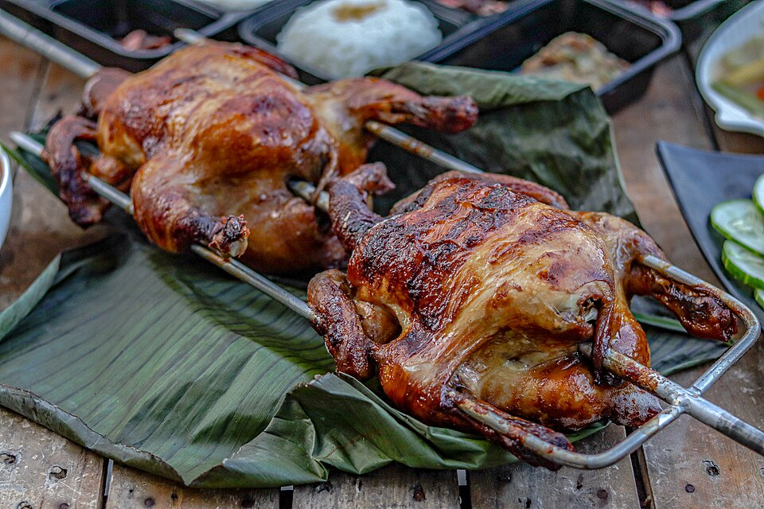

Lechon Manok

Lechon Manok is a popular Filipino dish made with roasted chicken.
The chicken is marinated in a blend of spices and seasonings,
which can include ingredients like garlic, lemongrass, onions, ginger, and sometimes even soda or other flavorings.
Traditionally, the whole chicken is skewered on a spit and roasted over charcoal until it develops a crispy skin and tender, flavorful meat.
It's often served with a dipping sauce made from vinegar, soy sauce, and spices.
Ingredients
- 12 to 3 lbs. whole Chicken
- 5 cloves garlic crushed
- 4 thumbs ginger crushed
- 1 medium red onion sliced
- 5 pieces dried bay leaves crumbled
- 1 stalk lemongrass bottom part crushed
- 1 stalked crush lemongrass
- 1 teaspoon coarse sea salt
- ¼ teaspoon ground black pepper
- 1 ¾ cups 7-up
- 2 bunches of green onions
Steps
- In a large bowl, combine all the marinade ingredients. Mix well.
-
Place the chicken inside a large re-sealable bag.
Pour the marinade in the bag with the chicken.
Put the onion and lemongrass inside the cavity.
Seal and refrigerate overnight.
- Remove the chicken from the bag and then stuff with fresh lemongrass and green onion.
- Prepare to roast the chicken on the grill by skewering the entire fowl on a spit and secure both sides with a grill fork.
- Spit-roast (or i-litson in Tagalog) for 2 ½ to 3 hours or until the chicken is done
- Transfer to a serving plate. Serve with lechon manok sauce and atchara.
Home